Inhalt Index DeskTop Bronstein

 Algebra und Diskrete Mathematik Elementare Zahlentheorie Sätze von Fermat, Euler und Wilson
Algebra und Diskrete Mathematik Elementare Zahlentheorie Sätze von Fermat, Euler und Wilson


Für jede natürliche Zahl m mit m > 0 kann man die Anzahl der zu m teilerfremden Zahlen x mit 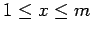 angeben. Die zugehörige Funkion  wird EULERsche Funktion genannt. Der Funktionswert 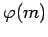 ist die Anzahl der primen Restklassen modulo m (s. Prime Restklassen).
wird EULERsche Funktion genannt. Der Funktionswert 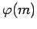 ist die Anzahl der primen Restklassen modulo m (s. Prime Restklassen).
Es gilt 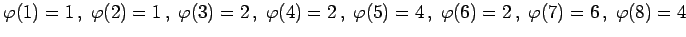 usw. Allgemein gilt 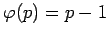 für jede Primzahl p und 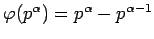 für jede Primzahlpotenz 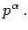 Ist m eine beliebige natürliche Zahl, dann kann man wie folgt berechnen:
| 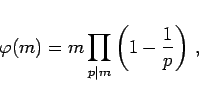 | (5.283a) |
wobei das Produkt über alle Primteiler p von m zu erstrecken ist.
| Beispiel |
|
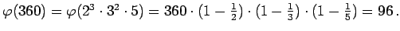 |
Außerdem gilt
| 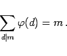 | (5.283b) |
Gilt 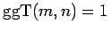, dann ist 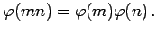
| Beispiel |
|
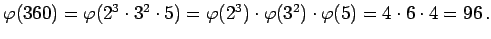 |